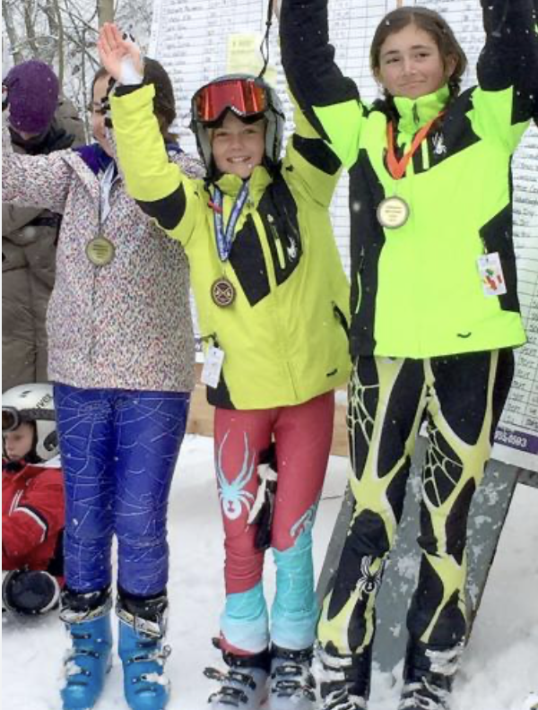

Growing up in Utah, it only made sense for me to become well versed in the sport of skiing.
Skiing quickly became a pasion from me as I started alpine ski racing. I was able to compete and train all over the world. After 9 years of training 3-5 days a week, my skiing career ended and I spent my last year in high school as a coach for the younger athletes. I am so grateful for the opportunities I had while ski racing and the discipline it taught me.

Back to Top